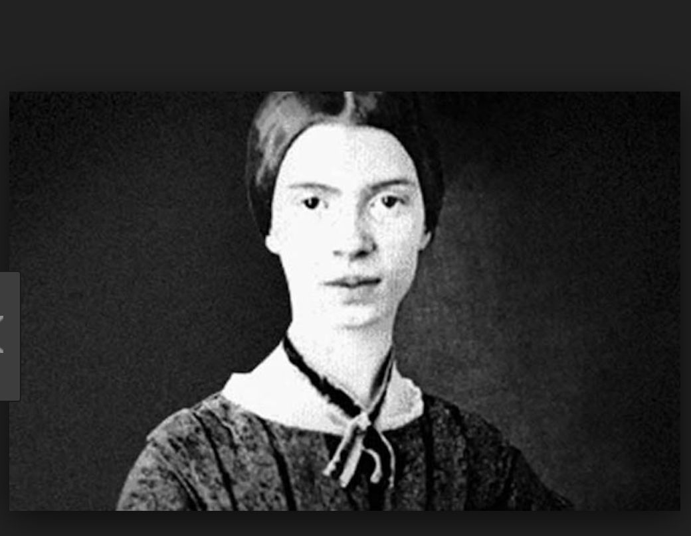

Emily Dickinson is from Amherst, Massachusetts and was born on December 10, 1830. She was with her family most of her life and did not have a lot of contact with the outside world. But, her poetry was read by many. Most of her poetry was influenced by the Book of Revelation and a Puritan, orthodox approach.

This sends you back to Poem.